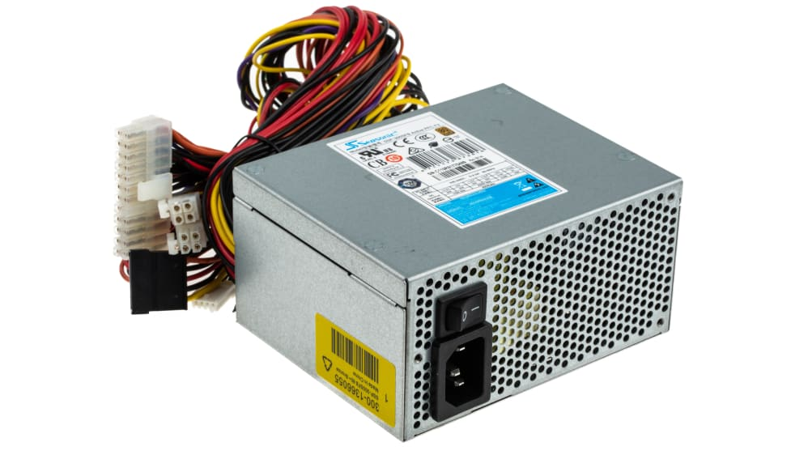

CPU |
The primary component of a computer
that acts as its “control center.” |
|
HDD |
The HDD (hard drive) stores data on a physical disk. |
|
Heatsink |
The heatsink dissipates and distributes heat away from the CPU. |
|
Motherboard |
A motherboard is the main circuit board in a computer that connects and allows communication between various hardware components, including the central processing unit (CPU), memory, storage devices, and peripheral devices. |
|
RAM |
RAM (Random Access Memory) is a type of computer memory that provides high-speed data access to the processor and temporarily stores actively used program instructions and data. |
 |
PSU |
PSU (Power supply unit) is an integral part of every comupter, it's the component that regulates power and supplies the entire computer with power. |
 |